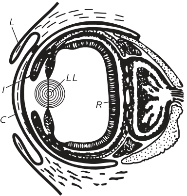
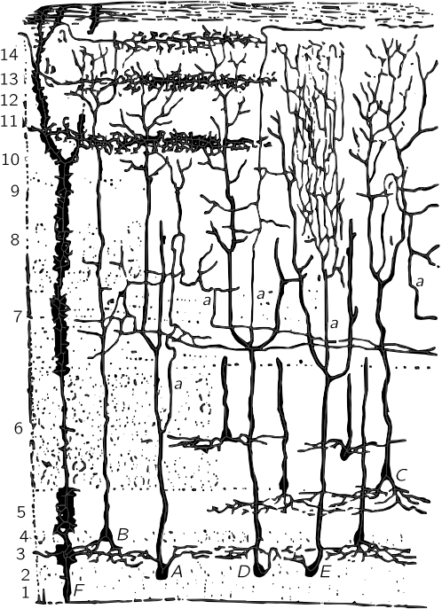

36. Mechanisms of Seeing
(There was no summary for this lecture.)
36–1 The sensation of color#
In discussing the sense of sight, we have to realize that (outside of a gallery of modern art!) one does not see random spots of color or spots of light. When we look at an object we see a man or a thing; in other words, the brain interprets what we see. How it does that, no one knows, and it does it, of course, at a very high level. Although we evidently do learn to recognize what a man looks like after much experience, there are a number of features of vision which are more elementary but which also involve combining information from different parts of what we see. To help us understand how we make an interpretation of an entire image, it is worthwhile to study the earliest stages of the putting together of information from the different retinal cells. In the present chapter we shall concentrate mainly on that aspect of vision, although we shall also mention a number of side issues as we go along.
An example of the fact that we have an accumulation, at a very elementary level, of information from several parts of the eye at the same time, beyond our voluntary control or ability to learn, was that blue shadow which was produced by white light when both white and red were shining on the same screen. This effect at least involves the knowledge that the background of the screen is pink, even though, when we are looking at the blue shadow, it is only “white” light coming into a particular spot in the eye; somewhere, pieces of information have been put together. The more complete and familiar the context is, the more the eye will make corrections for peculiarities. In fact, Land has shown that if we mix that apparent blue and the red in various proportions, by using two photographic transparencies with absorption in front of the red and the white in different proportions, it can be made to represent a real scene, with real objects, rather faithfully. In this case we get a lot of intermediate apparent colors too, analogous to what we would get by mixing red and blue-green; it seems to be an almost complete set of colors, but if we look very hard at them, they are not so very good. Even so, it is surprising how much can be obtained from just red and white. The more the scene looks like a real situation, the more one is able to compensate for the fact that all the light is actually nothing but pink!

Another example is the appearance of “colors” in a black-and-white rotating disc, whose black and white areas are as shown in Fig. 36–1. When the disc is rotated, the variations of light and dark at any one radius are exactly the same; it is only the background that is different for the two kinds of “stripes.” Yet one of the “rings” appears colored with one color and the other with another. 1 No one yet understands the reason for those colors, but it is clear that information is being put together at a very elementary level, in the eye itself, most likely.
Almost all present-day theories of color vision agree that the color-mixing data indicate that there are only three pigments in the cones of the eye, and that it is the spectral absorption in those three pigments that fundamentally produces the color sense. But the total sensation that is associated with the absorption characteristics of the three pigments acting together is not necessarily the sum of the individual sensations. We all agree that yellow simply does not seem to be reddish green; in fact it might be a tremendous surprise to most people to discover that light is, in fact, a mixture of colors, because presumably the sensation of light is due to some other process than a simple mixture like a chord in music, where the three notes are there at the same time and if we listen hard we can hear them individually. We cannot look hard and see the red and the green.
The earliest theories of vision said that there are three pigments and three kinds of cones, each kind containing one pigment; that a nerve runs from each cone to the brain, so that the three pieces of information are carried to the brain; and then in the brain, anything can happen. This, of course, is an incomplete idea: it does no good to discover that the information is carried along the optic nerve to the brain, because we have not even started to solve the problem. We must ask more basic questions: Does it make any difference where the information is put together? Is it important that it be carried right up into the brain in the optic nerve, or could the retina do some analysis first? We have seen a picture of the retina as an extremely complicated thing with lots of interconnections (Fig. 35–2) and it might make some analyses.
As a matter of fact, people who study anatomy and the development of the eye have shown that the retina is, in fact, the brain: in the development of the embryo, a piece of the brain comes out in front, and long fibers grow back, connecting the eyes to the brain. The retina is organized in just the way the brain is organized and, as someone has beautifully put it, “The brain has developed a way to look out upon the world.” The eye is a piece of brain that is touching light, so to speak, on the outside. So it is not at all unlikely that some analysis of the color has already been made in the retina.
This gives us a very interesting opportunity. None of the other senses involves such a large amount of calculation, so to speak, before the signal gets into a nerve that one can make measurements on. The calculations for all the rest of the senses usually happen in the brain itself, where it is very difficult to get at specific places to make measurements, because there are so many interconnections. Here, with the visual sense, we have the light, three layers of cells making calculations, and the results of the calculations being transmitted through the optic nerve. So we have the first chance to observe physiologically how, perhaps, the first layers of the brain work in their first steps. It is thus of double interest, not simply interesting for vision, but interesting to the whole problem of physiology.
The fact that there are three pigments does not mean that there must be three kinds of sensations. One of the other theories of color vision has it that there are really opposing color schemes (Fig. 36–2). That is, one of the nerve fibers carries a lot of impulses if there is yellow being seen, and less than usual for blue. Another nerve fiber carries green and red information in the same way, and another, white and black. In other words, in this theory someone has already started to make a guess as to the system of wiring, the method of calculation.

The problems we are trying to solve by guessing at these first calculations are questions about the apparent colors that are seen on a pink background, what happens when the eye is adapted to different colors, and also the so-called psychological phenomena. The psychological phenomena are of the nature, for instance, that white does not “feel” like red and yellow and blue, and this theory was advanced because the psychologists say that there are four apparent pure colors: “There are four stimuli which have a remarkable capacity to evoke psychologically simple blue, yellow, green, and red hues respectively. Unlike sienna, magenta, purple, or most of the discriminable colors, these simple hues are unmixed in the sense that none partakes of the nature of the other; specifically, blue is not yellowish, reddish, or greenish, and so on; these are psychologically primary hues.” That is a psychological fact, so-called. To find out from what evidence this psychological fact was deduced, we must search very hard indeed through all the literature: In the modern literature all we find on the subject are repeats of the same statement, or of one by a German psychologist, who uses as one of his authorities Leonardo da Vinci, who, of course, we all know was a great artist. He says, “Leonardo thought there were five colors.” Then, looking still further, we find, in a still older book, the evidence for the subject. The book says something like this: “Purple is reddish-blue, orange is reddish-yellow, but can red be seen as purplish-orange? Are not red and yellow more unitary than purple or orange? The average person, asked to state which colors are unitary, names red, yellow, and blue, these three, and some observers add a fourth, green. Psychologists are accustomed to accept the four as salient hues.” So that is the situation in the psychological analysis of this matter: if everybody says there are three, and somebody says there are four, and they want it to be four, it will be four. That shows the difficulty with psychological researches. It is clear that we have such feelings, but it is very difficult to obtain much information about them.
So the other direction to go is the physiological direction, to find out experimentally what actually happens in the brain, the eye, the retina, or wherever, and perhaps to discover that some combinations of impulses from various cells move along certain nerve fibers. Incidentally, primary pigments do not have to be in separate cells; one could have cells in which are mixtures of the various pigments, cells with the red and the green pigments, cells with all three (the information of all three is then white information), and so on. There are many ways of hooking the system up, and we have to find out which way nature has used. It would be hoped, ultimately, that when we understand the physiological connections we will have a little bit of understanding of some of those aspects of the psychology, so we look in that direction.
36–2 The physiology of the eye#
We begin by talking not only about color vision, but about vision in general, just to remind ourselves about the interconnections in the retina, shown in Fig. 35–2. The retina is really like the surface of the brain. Although the actual picture through a microscope is a little more complicated looking than this somewhat schematized drawing, by careful analysis one can see all these interconnections. There is no question that one part of the surface of the retina is connected to other parts, and that the information that comes out on the long axons, which produce the optic nerve, are combinations of information from many cells. There are three layers of cells in the succession of function: there are retinal cells, which are the ones that the light affects, an intermediate cell which takes information from a single or a few retinal cells and gives it out again to several cells in a third layer of cells and carries it to the brain. There are all kinds of cross connections between cells in the layers.
We now turn to some aspects of the structure and performance of the eye (see Fig. 35–1). The focusing of the light is accomplished mainly by the cornea, by the fact that it has a curved surface which “bends” the light. This is why we cannot see clearly under water, because we then do not have enough difference between the index of the cornea, which is 1.37, and that of the water, which is 1.33. Behind the cornea is water, practically, with an index of 1.33, and behind that is a lens which has a very interesting structure: it is a series of layers, like an onion, except that it is all transparent, and it has an index of 1.40 in the middle and 1.38 at the outside. (It would be nice if we could make optical glass in which we could adjust the index throughout, for then we would not have to curve it as much as we do when we have a uniform index.) Furthermore, the shape of the cornea is not that of a sphere. A spherical lens has a certain amount of spherical aberration. The cornea is “flatter” at the outside than is a sphere, in just such a manner that the spherical aberration is less for the cornea than it would be if we put a spherical lens in there! The light is focused by the cornea-lens system onto the retina. As we look at things that are closer and farther away, the lens tightens and loosens and changes the focus to adjust for the different distances. To adjust for the total amount of light there is the iris, which is what we call the color of the eye, brown or blue, depending on who it is; as the amount of light increases and decreases, the iris moves in and out.

Let us now look at the neural machinery for controlling the accommodation of the lens, the motion of the eye, the muscles which turn the eye in the socket, and the iris, shown schematically in Fig. 36–3. Of all the information that comes out of the optic nerve A, the great majority is divided into one of two bundles (which we will talk about later) and thence to the brain. But there are a few fibers, of interest to us now, which do not run directly to the visual cortex of the brain where we “see” the images, but instead go into the mid-brain H. These are the fibers which measure the average light and make adjustment for the iris; or, if the image looks foggy, they try to correct the lens; or, if there is a double image, they try to adjust the eye for binocular vision. At any rate, they go through the mid-brain and feed back into the eye. At K are the muscles which run the accommodation of the lens, and at L another one that runs into the iris. The iris has two muscle systems. One is a circular muscle L which, when it is excited, pulls in and closes down the iris; it acts very rapidly and the nerves are directly connected from the brain through short axons into the iris. The opposite muscles are radial muscles, so that, when the things get dark and the circular muscle relaxes, these radial muscles pull out. Here we have, as in many places in the body, a pair of muscles which work in opposite directions, and in almost every such case the nerve systems which control the two are very delicately adjusted, so that when signals are sent in to tighten one, signals are automatically sent in to loosen the other. The iris is a peculiar exception: the nerves which make the iris contract are the ones we have already described, but the nerves which make the iris expand come out from no one knows exactly where, go down into the spinal cord back of the chest, into the thoracic sections, out of the spinal cord, up through the neck ganglia, and all the way around and back up into the head in order to run the other end of the iris. In fact, the signal goes through a completely different nervous system, not the central nervous system at all, but the sympathetic nervous system, so it is a very strange way of making things go.
We have already emphasized another strange thing about the eye, that the light-sensitive cells are on the wrong side, so that the light has to go through several layers of other cells before it gets to the receptors—it is built inside out! So some of the features are wonderful and some are apparently stupid.

Figure 36–4 shows the connections of the eye to the part of the brain which is most directly concerned with the visual process. The optic nerve fibers run into a certain area just beyond D, called the lateral geniculate, whereupon they run out to a section of the brain called the visual cortex. Notice that some of the fibers from each eye are sent over to the other side of the brain, so the picture formed is incomplete. The optic nerves from the left side of the right eye run across the optic chiasma B, while the ones on the left side of the left eye come around and go this same way. So the left side of the brain receives all the information which comes from the left side of the eyeball of each eye, i.e., on the right side of the visual field, while the right side of the brain sees the left side of the visual field. This is the manner in which the information from each of the two eyes is put together in order to tell how far away things are. This is the system of binocular vision.
The connections between the retina and the visual cortex are interesting. If a spot in the retina is excised or destroyed in any way, then the whole fiber will die, and we can thereby find out where it is connected. It turns out that, essentially, the connections are one to one—for each spot in the retina there is one spot in the visual cortex—and spots that are very close together in the retina are very close together in the visual cortex. So the visual cortex still represents the spatial arrangement of the rods and cones, but of course much distorted. Things which are in the center of the field, which occupy a very small part of the retina, are expanded over many, many cells in the visual cortex. It is clear that it is useful to have things which are originally close together, still close together. The most remarkable aspect of the matter, however, is the following. The place where one would think it would be most important to have things close together would be right in the middle of the visual field. Believe it or not, the up-and-down line in our visual field as we look at something is of such a nature that the information from all the points on the right side of that line is going into the left side of the brain, and information from the points on the left side is going into the right side of the brain, and the way this area is made, there is a cut right down through the middle, so that the things that are very close together right in the middle are very far apart in the brain! Somehow, the information has to go from one side of the brain to the other through some other channels, which is quite surprising.
The question of how this network ever gets “wired” together is very interesting. The problem of how much is already wired and how much is learned is an old one. It used to be thought long ago that perhaps it does not have to be wired carefully at all, it is only just roughly interconnected, and then, by experience, the young child learns that when a thing is “up there” it produces some sensation in the brain. (Doctors always tell us what the young child “feels,” but how do they know what a child feels at the age of one?) The child, at the age of one, supposedly sees that an object is “up there,” gets a certain sensation, and learns to reach “there,” because when he reaches “here,” it does not work. That approach probably is not correct, because we already see that in many cases there are these special detailed interconnections. More illuminating are some most remarkable experiments done with a salamander. (Incidentally, with the salamander there is a direct crossover connection, without the optic chiasma, because the eyes are on each side of the head and have no common area. Salamanders do not have binocular vision.) The experiment is this. We can cut the optic nerve in a salamander and the nerve will grow out from the eyes again. Thousands and thousands of cell fibers will thus re-establish themselves. Now, in the optic nerve the fibers do not stay adjacent to each other—it is like a great, sloppily made telephone cable, all the fibers twisting and turning, but when it gets to the brain they are all sorted out again. When we cut the optic nerve of the salamander, the interesting question is, will it ever get straightened out? The answer is remarkable: yes. If we cut the optic nerve of the salamander and it grows back, the salamander has good visual acuity again. However, if we cut the optic nerve and turn the eye upside down and let it grow back again, it has good visual acuity all right, but it has a terrible error: when the salamander sees a fly “up here,” it jumps at it “down there,” and it never learns. Therefore there is some mysterious way by which the thousands and thousands of fibers find their right places in the brain.
This problem of how much is wired in, and how much is not, is an important problem in the theory of the development of creatures. The answer is not known, but is being studied intensively.
The same experiment in the case of a goldfish shows that there is a terrible knot, like a great scar or complication, in the optic nerve where we cut it, but in spite of all this the fibers grow back to their right places in the brain.
In order to do this, as they grow into the old channels of the optic nerve they must make several decisions about the direction in which they should grow. How do they do this? There seem to be chemical clues that different fibers respond to differently. Think of the enormous number of growing fibers, each of which is an individual differing in some way from its neighbors; in responding to whatever the chemical clues are, it responds in a unique enough way to find its proper place for ultimate connection in the brain! This is an interesting—a fantastic—thing. It is one of the great recently discovered phenomena of biology and is undoubtedly connected to many older unsolved problems of growth, organization, and development of organisms, and particularly of embryos.
One other interesting phenomenon has to do with the motion of the eye. The eyes must be moved in order to make the two images coincide in different circumstances. These motions are of different kinds: one is to follow something, which requires that both eyes must go in the same direction, right or left, and the other is to point them toward the same place at various distances away, which requires that they must move oppositely. The nerves going into the muscles of the eye are already wired up for just such purposes. There is one set of nerves which will pull the muscles on the inside of one eye and the outside of the other, and relax the opposite muscles, so that the two eyes move together. There is another center where an excitation will cause the eyes to move in toward each other from parallel. Either eye can be turned out to the corner if the other eye moves toward the nose, but it is impossible consciously or unconsciously to turn both eyes out at the same time, not because there are no muscles, but because there is no way to send a signal to turn both eyes out, unless we have had an accident or there is something the matter, for instance if a nerve has been cut. Although the muscles of one eye can certainly steer that eye about, not even a Yogi is able to move both eyes out freely under voluntary control, because there does not seem to be any way to do it. We are already wired to a certain extent. This is an important point, because most of the earlier books on anatomy and psychology, and so on, do not appreciate or do not emphasize the fact that we are so completely wired already—they say that everything is just learned.
36–3 The rod cells#

Let us now examine in more detail what happens in the rod cells. Figure 36–5 shows an electron micrograph of the middle of a rod cell (the rod cell keeps going up out of the field). There are layer after layer of plane structures, shown magnified at the right, which contain the substance rhodopsin (visual purple), the dye, or pigment, which produces the effects of vision in the rods. The rhodopsin, which is the pigment, is a big protein which contains a special group called retinene, which can be taken off the protein, and which is, undoubtedly, the main cause of the absorption of light. We do not understand the reason for the planes, but it is very likely that there is some reason for holding all the rhodopsin molecules parallel. The chemistry of the thing has been worked out to a large extent, but there might be some physics to it. It may be that all of the molecules are arranged in some kind of a row so that when one is excited an electron which is generated, say, may run all the way down to some place at the end to get the signal out, or something. This subject is very important, and has not been worked out. It is a field in which both biochemistry and solid state physics, or something like it, will ultimately be used.

This kind of a structure, with layers, appears in other circumstances where light is important, for example in the chloroplast in plants, where the light causes photosynthesis. If we magnify those, we find the same thing with almost the same kind of layers, but there we have chlorophyll, of course, instead of retinene. The chemical form of retinene is shown in Fig. 36–6. It has a series of alternate double bonds along the side chain, which is characteristic of nearly all strongly absorbing organic substances, like chlorophyll, blood, and so on. This substance is impossible for human beings to manufacture in their own cells—we have to eat it. So we eat it in the form of a special substance, which is exactly the same as retinene except that there is a hydrogen tied on the right end; it is called vitamin A, and if we do not eat enough of it, we do not get a supply of retinene, and the eye becomes what we call night blind, because there is then not enough pigment in the rhodopsin to see with the rods at night.
The reason why such a series of double bonds absorbs light very strongly is also known. We may just give a hint: The alternating series of double bonds is called a conjugated double bond; a double bond means that there is an extra electron there, and this extra electron is easily shifted to the right or left. When light strikes this molecule, the electron of each double bond is shifted over by one step. All the electrons in the whole chain shift, like a string of dominoes falling over, and though each one moves only a little distance (we would expect that, in a single atom, we could move the electron only a little distance), the net effect is the same as though the one at the end was moved over to the other end! It is the same as though one electron went the whole distance back and forth, and so, in this manner, we get a much stronger absorption under the influence of the electric field, than if we could only move the electron a distance which is associated with one atom. So, since it is easy to move the electrons back and forth, retinene absorbs light very strongly; that is the machinery of the physical-chemical end of it.
36–4 The compound (insect) eye#
Let us now return to biology. The human eye is not the only kind of eye. In the vertebrates, almost all eyes are essentially like the human eye. However, in the lower animals there are many other kinds of eyes: eye spots, various eye cups, and other less sensitive things, which we have no time to discuss. But there is one other highly developed eye among the invertebrates, the compound eye of the insect. (Most insects having large compound eyes also have various additional simpler eyes as well.) A bee is an insect whose vision has been studied very carefully. It is easy to study the properties of the vision of bees because they are attracted to honey, and we can make experiments in which we identify the honey by putting it on blue paper or red paper, and see which one they come to. By this method some very interesting things have been discovered about the vision of the bee.
In the first place, in trying to measure how acutely bees could see the color difference between two pieces of “white” paper, some researchers found they were not very good, and others found they were fantastically good. Even if the two pieces of white paper were almost exactly the same, the bees could still tell the difference. The experimenters used zinc white for one piece of paper and lead white for the other, and although these look exactly the same to us, the bee could easily distinguish them, because they reflect a different amount in the ultraviolet. In this way it was discovered that the bee’s eye is sensitive over a wider range of the spectrum than is our own. Our eye works from 7000 angstroms to 4000 angstroms, from red to violet, but the bee’s can see down to 3000 angstroms into the ultraviolet! This makes for a number of different interesting effects. In the first place, bees can distinguish between many flowers which to us look alike. Of course, we must realize that the colors of flowers are not designed for our eyes, but for the bee; they are signals to attract the bees to a specific flower. We all know that there are many “white” flowers. Apparently white is not very interesting to the bees, because it turns out that all of the white flowers have different proportions of reflection in the ultraviolet; they do not reflect one hundred percent of the ultraviolet as would a true white. All the light is not coming back, the ultraviolet is missing, and that is a color, just as, for us, if the blue is missing, it comes out yellow. So, all the flowers are colored for the bees. However, we also know that red cannot be seen by bees. Thus we might expect that all red flowers should look black to the bee. Not so! A careful study of red flowers shows, first, that even with our own eye we can see that a great majority of red flowers have a bluish tinge because they are mainly reflecting an additional amount in the blue, which is the part that the bee sees. Furthermore, experiments also show that flowers vary in their reflection of the ultraviolet over different parts of the petals, and so on. So if we could see the flowers as bees see them they would be even more beautiful and varied!
It has been shown, however, that there are a few red flowers which do not reflect in the blue or in the ultraviolet, and would, therefore, appear black to the bee! This was of quite some concern to the people who worry about this matter, because black does not seem like an interesting color, since it is hard to tell from a dirty old shadow. It actually turned out that these flowers were not visited by bees, these are the flowers that are visited by hummingbirds, and hummingbirds can see the red!
Another interesting aspect of the vision of the bee is that bees can apparently tell the direction of the sun by looking at a patch of blue sky, without seeing the sun itself. We cannot easily do this. If we look out the window at the sky and see that it is blue, in which direction is the sun? The bee can tell, because the bee is quite sensitive to the polarization of light, and the scattered light of the sky is polarized. 2 There is still some debate about how this sensitivity operates. Whether it is because the reflections of the light are different in different circumstances, or the bee’s eye is directly sensitive, is not yet known. 3
It is also said that the bee can notice flicker up to 200 oscillations per second, while we see it only up to 20. The motions of bees in the hives are very quick; the feet move and the wings vibrate, but it is very hard for us to see these motions with our eye. However, if we could see more rapidly we would be able to see the motion. It is probably very important to the bee that its eye has such a rapid response.

Now let us discuss the visual acuity we could expect from the bee. The eye of a bee is a compound eye, and it is made of a large number of special cells called ommatidia, which are arranged conically on the surface of a sphere (roughly) on the outside of the bee’s head. Figure 36–7 shows a picture of one such ommatidium. At the top there is a transparent area, a kind of “lens,” but actually it is more like a filter or light pipe to make the light come down along the narrow fiber, which is where the absorption presumably occurs. Out of the other end of it comes the nerve fiber. The central fiber is surrounded on its sides by six cells which, in fact, have secreted the fiber. That is enough description for our purposes; the point is that it is a conical thing and many can fit next to each other all over the surface of the eye of the bee.

Now let us discuss the resolution of the eye of the bee. If we draw lines (Fig. 36–8) to represent the ommatidia on the surface, which we suppose is a sphere of radius r, we may actually calculate how wide each ommatidium is by using our brains, and assuming that evolution is as clever as we are! If we have a very large ommatidium we do not have much resolution. That is, one cell gets a piece of information from one direction, and the adjacent cell gets a piece of information from another direction, and so on, and the bee cannot see things in between very well. So the uncertainty of visual acuity in the eye will surely correspond to an angle, the angle of the end of the ommatidium relative to the center of curvature of the eye. (The eye cells, of course, exist only at the surface of the sphere; inside that is the head of the bee.) This angle, from one ommatidium to the next, is, of course, the diameter of the ommatidia divided by the radius of the eye surface:
So, we may say, “The finer we make the \delta, the more the visual acuity. So why doesn’t the bee just use very, very fine ommatidia?” Answer: We know enough physics to realize that if we are trying to get light down into a narrow slot, we cannot see accurately in a given direction because of the diffraction effect. The light that comes from several directions can enter and, due to diffraction, we will get light coming in at angle \Delta\theta_d such that
Now we see that if we make the \delta too small, then each ommatidium does not look in only one direction, because of diffraction! If we make them too big, each one sees in a definite direction, but there are not enough of them to get a good view of the scene. So we adjust the distance \delta in order to make minimal the total effect of these two. If we add the two together, and find the place where the sum has a minimum (Fig. 36–9), we find that
which gives us a distance
If we guess that r is about 3 millimeters, take the light that the bee sees as 4000 angstroms, and put the two together and take the square root, we find
The book says the diameter is 30 \mu m, so that is rather good agreement! So, apparently, it really works, and we can understand what determines the size of the bee’s eye! It is also easy to put the above number back in and find out how good the bee’s eye actually is in angular resolution; it is very poor relative to our own. We can see things that are thirty times smaller in apparent size than the bee; the bee has a rather fuzzy out-of-focus image relative to what we can see. Nevertheless it is all right, and it is the best they can do. We might ask why the bees do not develop a good eye like our own, with a lens and so on. There are several interesting reasons. In the first place, the bee is too small; if it had an eye like ours, but on his scale, the opening would be about 30 \mu m in size and diffraction would be so important that it would not be able to see very well anyway. The eye is not good if it is too small. Secondly, if it were as big as the bee’s head, then the eye would occupy the whole head of the bee. The beauty of the compound eye is that it takes up no space, it is just a very thin layer on the surface of the bee. So when we argue that they should have done it our way, we must remember that they had their own problems!

36–5 Other eyes#
Besides the bees, many other animals can see color. Fish, butterflies, birds, and reptiles can see color, but it is believed that most mammals cannot. The primates can see color. The birds certainly see color, and that accounts for the colors of birds. There would be no point in having such brilliantly colored males if the females could not notice it! That is, the evolution of the sexual “whatever it is” that the birds have is a result of the female being able to see color. So next time we look at a peacock and think of what a brilliant display of gorgeous color it is, and how delicate all the colors are, and what a wonderful aesthetic sense it takes to appreciate all that, we should not compliment the peacock, but should compliment the visual acuity and aesthetic sense of the pea hen, because that is what has generated the beautiful scene!

All invertebrates have poorly developed eyes or compound eyes, but all the vertebrates have eyes very similar to our own, with one exception. If we consider the highest form of animal, we usually say, “Here we are!,” but if we take a less prejudiced point of view and restrict ourselves to the invertebrates, so that we cannot include ourselves, and ask what is the highest invertebrate animal, most zoologists agree that the octopus is the highest animal! It is very interesting that, besides the development of its brain and its reactions and so on, which are rather good for an invertebrate, it has also developed, independently, a different eye. It is not a compound eye or an eye spot—it has a cornea, it has lids, it has an iris, it has a lens, it has two regions of water, it has a retina behind. It is essentially the same as the eye of the vertebrates! It is a remarkable example of a coincidence in evolution where nature has twice discovered the same solution to a problem, with one slight improvement. In the octopus it also turns out, amazingly, that the retina is a piece of the brain that has come out in the same way in its embryonic development as is true for vertebrates, but the interesting thing which is different is that the cells which are sensitive to light are on the inside, and the cells which do the calculation are in back of them, rather than “inside out,” as in our eye. So we see, at least, that there is no good reason for its being inside out. The other time nature tried it, she got it straightened out! (See Fig. 36–10.) The biggest eyes in the world are those of the giant squid; they have been found up to 15 inches in diameter!
36–6 Neurology of vision#
One of the main points of our subject is the interconnection of information from one part of the eye to the other. Let us consider the compound eye of the horseshoe crab, on which considerable experimentation has been done. First of all, we must appreciate what kind of information can come along nerves. A nerve carries a kind of disturbance which has an electrical effect that is easy to detect, a kind of wavelike disturbance which runs down the nerve and produces an effect at the other end: a long piece of the nerve cell, called the axon, carries the information along, and a certain kind of impulse, called a “spike,” goes along if it is excited at one end. When one spike goes down the nerve, another cannot immediately follow. All the spikes are of the same size, so it is not that we get higher spikes when the thing is more strongly excited, but that we get more spikes per second. The size of the spike is determined by the fiber. It is important to appreciate this in order to see what happens next.

Figure 36–11 (a) shows the compound eye of the horseshoe crab; it is not very much of an eye, it has only about a thousand ommatidia. Figure 36–11 (b) is a cross section through the system; one can see the ommatidia, with the nerve fibers that run out of them and go into the brain. But note that even in a horseshoe crab there are little interconnections. They are much less elaborate than in the human eye, and it gives us a chance to study a simpler example.
Let us now look at the experiments which have been done by putting fine electrodes into the optic nerve of the horseshoe crab, and shining light on only one of the ommatidia, which is easy to do with lenses. If we turn a light on at some instant t_0, and measure the electrical pulses that come out, we find that there is a slight delay and then a rapid series of discharges which gradually slow down to a uniform rate, as shown in Fig. 36–12 (a). When the light goes out, the discharge stops. Now it is very interesting that if, while our amplifier is connected to this same nerve fiber, we shine light on a different ommatidium nothing happens; no signal.
Now we do another experiment: we shine the light on the original ommatidium and get the same response, but if we now turn light on another one nearby as well, the pulses are interrupted briefly and then run at a much lower rate (Fig. 36–12 b). The rate of one is inhibited by the impulses which are coming out of the other! In other words, each nerve fiber carries the information from one ommatidium, but the amount that it carries is inhibited by the signals from the others. So, for example, if the whole eye is more or less uniformly illuminated, the information coming from any one ommatidium will be relatively weak, because it is inhibited by so many. In fact the inhibition is additive—if we shine light on several nearby ommatidia the inhibition is very great. The inhibition is greater when the ommatidia are closer, and if the ommatidia are far enough away from one another, inhibition is practically zero. So it is additive and depends on the distance; here is a first example of information from different parts of the eye being combined in the eye itself. We can see, perhaps, if we think about it awhile, that this is a device to enhance contrast at the edges of objects, because if a part of the scene is light and a part is black, then the ommatidia in the lighted area give impulses that are inhibited by all the other light in the neighborhood, so it is relatively weak. On the other hand, an ommatidium at the boundary which is given a “white” impulse is also inhibited by others in the neighborhood, but there are not as many of them, since some are black; the net signal is therefore stronger. The result would be a curve, something like that of Fig. 36–13. The crab will see an enhancement of the contour.

The fact that there is an enhancement of contours has long been known; in fact it is a remarkable thing that has been commented on by psychologists many times. In order to draw an object, we have only to draw its outline. How used we are to looking at pictures that have only the outline! What is the outline? The outline is only the edge difference between light and dark or one color and another. It is not something definite. It is not, believe it or not, that every object has a line around it! There is no such line. It is only in our own psychological makeup that there is a line; we are beginning to understand the reasons why the “line” is enough of a clue to get the whole thing. Presumably our own eye works in some similar manner—much more complicated, but similar.
Finally, we shall briefly describe the more elaborate work, the beautiful, advanced work that has been done on the frog. Doing a corresponding experiment on a frog, by putting very fine, beautifully built needlelike probes into the optic nerve of a frog, one can obtain the signals that are going along one particular axon and, just as in the case of the horseshoe crab, we find that the information does not depend on just one spot in the eye, but is a sum of information over several spots.
| Type | Speed | Angular field |
| 1. Sustained edge detection (nonerasable) | 0.2 – 0.5 m/sec | 1^\circ |
| 2. Convex edge detection (erasable) | 0.5 m/sec | 2^\circ – 3^\circ |
| 3. Changing contrast detection | 1 – 2 m/sec | 7^\circ – 10^\circ |
| 4. Dimming detection | \text{Up to }\frac{1}{2} m/sec | Up to 15^\circ |
| 5. Darkness detection | ? | Very large |
The most recent picture of the operation of the frog’s eye is the following. One can find four different kinds of optic nerve fibers, in the sense that there are four different kinds of responses. These experiments were not done by shining on-and-off impulses of light, because that is not what a frog sees. A frog just sits there and his eyes never move, unless the lily pad is flopping back and forth, and in that case his eyes wobble just right so that the image stays put. He does not turn his eyes. If anything moves in his field of vision, like a little bug (he has to be able to see something small moving in the fixed background), it turns out that there are four different kinds of fibers which discharge, whose properties are summarized in Table 36–1. Sustained edge detection, nonerasable, means that if we bring an object with an edge into the field of view of the frog, then there are a lot of impulses in this particular fiber while the object is moving, but they die down to a sustained impulse that continues as long as the edge is there, even if it is standing still. If we turn out the light, the impulses stop. If we turn it on again while the edge is still in view, they start again. They are not erasable. Another kind of fiber is very similar, except that if the edge is straight it does not work. It must be a convex edge with dark behind it! How complicated must be the system of interconnections in the retina of the eye of the frog in order for it to understand that a convex surface has moved in! Furthermore, although this fiber does sustain somewhat, it does not sustain as long as the other, and if we turn out the light and turn it on again it does not build up again. It depends on the moving in of the convex surface. The eye sees it move in and remembers that it is there, but if we merely turn out the light for a moment, it simply forgets it and no longer sees it.
Another example is change-in-contrast detection. If there is an edge moving in or out there are pulses, but if the thing stands still there are no pulses at all.
Then there is a dimming detector. If the light intensity is going down it creates pulses, but if it stays down or stays up, the impulse stops; it only works while the light is dimming.
Then, finally, there are a few fibers which are dark detectors—a most amazing thing—they fire all the time! If we increase the light, they fire less rapidly, but all the time. If we decrease the light, they fire more rapidly, all the time. In the dark they fire like mad, perpetually saying, “It is dark! It is dark! It is dark!”
Now these responses seem to be rather complicated to classify, and we might wonder whether perhaps the experiments are being misinterpreted. But it is very interesting that these same classes are very clearly separated in the anatomy of the frog! By other measurements, after these responses had been classified ( afterwards, that is what is important about this), it was discovered that the speed of the signals on the different fibers was not the same, so here was another, independent way to check which kind of a fiber we have found!
Another interesting question is from how big an area is one particular fiber making its calculations? The answer is different for the different classes.

Figure 36–14 shows the surface of the so-called tectum of a frog, where the nerves come into the brain from the optic nerve. All the nerve fibers coming in from the optic nerve make connections in various layers of the tectum. This layered structure is analogous to the retina; that is partly why we know that the brain and retina are very similar. Now, by taking an electrode and moving it down in succession through the layers, we can find out which kinds of optic nerves end where, and the beautiful and wonderful result is that the different kinds of fibers end in different layers! The first ones end in number 1 type, the second in number 2, the threes and fives end in the same place, and deepest of all is number four. (What a coincidence, they got the numbers almost in the right order! No, that is why they numbered them that way, the first paper had the numbers in a different order!)
We may briefly summarize what we have just learned this way: There are three pigments, presumably. There may be many different kinds of receptor cells containing the three pigments in different proportions, but there are many cross connections which may permit additions and subtractions through addition and reinforcement in the nervous system. So before we really understand color vision, we will have to understand the final sensation. This subject is still an open one, but these researches with microelectrodes and so on will perhaps ultimately give us more information on how we see color.
bibliography Committee on Colorimetry, Optical Society of America, The Science of Color, Thomas Y. Crowell Company, New York, 1953. “Mechanisms of Vision,” 2nd Supplement to Journal of General Physiology, Vol. 43, No. 6, Part 2, July 1960, Rockefeller Institute Press. specific articles: DeRobertis, E., “Some Observations on the Ultrastructure and Morphogenesis of Photoreceptors,” pp. 1–15. Hurvich, L. M. and D. Jameson, “Perceived Color, Induction Effects, and Opponent-Response Mechanisms,” pp. 63–80. Rosenblith, W. A., ed., Sensory Communication, Massachusetts Institute of Technology Press, Cambridge, Mass., 1961. “Sight, Sense of,” Encyclopaedia Britannica, Vol. 20, 1957, pp. 628—635.